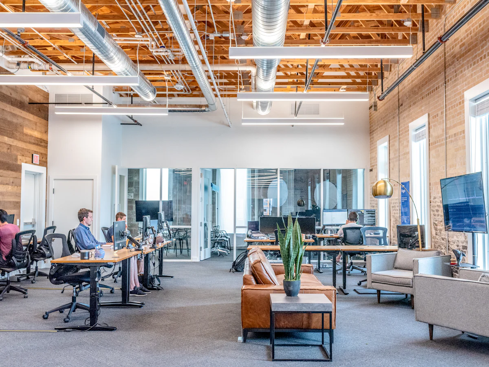
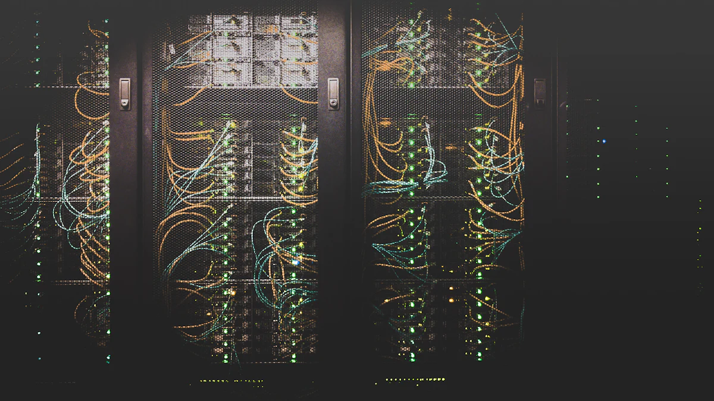
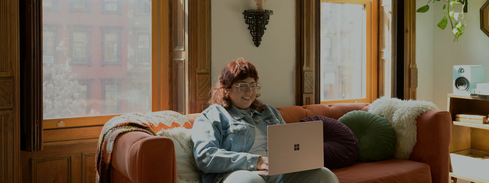

Dépannage informatique à Saint-Laurent-du-Var
Juste de l'autre côté du Var, Saint-Laurent-du-Var est à quelques minutes de nos bureaux niçois. Particuliers comme entreprises, nous venons chez vous pour réparer, installer, sécuriser et vous conseiller.

Assistance informatique à domicile pour les Laurentins
Du bord de mer et du port jusqu'aux quartiers résidentiels des Pugets, de Montaleigne ou du Plan du Bois, nous intervenons à domicile pour tous les soucis du quotidien : lenteurs, virus, mises à jour bloquées, imprimante introuvable, Wi-Fi qui ne couvre pas toute la maison.
Vous venez d'acheter un nouvel ordinateur ? Nous le configurons, transférons vos fichiers, photos et e-mails depuis l'ancien et vérifions que tout fonctionne avant de partir.
En savoir plus sur l'assistance aux particuliers
Votre service informatique externalisé à Saint-Laurent-du-Var
Entreprises des zones d'activités le long du Var, commerces, agences et professions libérales : nous prenons en charge votre parc informatique, votre réseau et vos sauvegardes, avec un interlocuteur unique qui connaît votre installation.
Helpdesk pour vos équipes, supervision des postes, Microsoft 365, pare-feu, téléphonie VoIP : nous intervenons sur site rapidement grâce à la proximité de nos locaux.
Découvrir l'offre entreprisesQuartiers et communes desservis autour de Saint-Laurent-du-Var
Nous couvrons tout Saint-Laurent-du-Var ainsi que les communes de la basse vallée du Var.
- Centre-ville
- Le Port
- Les Pugets
- Montaleigne
- Plan du Bois
- Les Iscles
- Cagnes-sur-Mer
- La Gaude
- Saint-Jeannet
- Gattières
- Carros
Nous intervenons aussi à Nice, Cagnes-sur-Mer, Antibes. Voir toute notre zone d'intervention.
Nos services informatiques à Saint-Laurent-du-Var
Particuliers ou professionnels, du bord de mer aux collines laurentines : voici les interventions que l'on nous demande le plus souvent.
Pour les particuliers
Dépannage informatique à Saint-Laurent-du-Var : vos questions
Pouvez-vous intervenir dans la journée à Saint-Laurent-du-Var ?
Saint-Laurent-du-Var étant tout proche de nos bureaux, une intervention dans la journée est souvent possible selon notre planning. À défaut, l'assistance à distance permet de régler la plupart des problèmes logiciels immédiatement.
Proposez-vous des contrats de maintenance pour les entreprises ?
Oui, notre Contrat Sérénité inclut le helpdesk à distance, la supervision, l'antivirus managé et un délai d'intervention garanti. Découvrez notre offre entreprises.
Récupérez-vous les données d'un ordinateur en panne ?
Dans la plupart des cas, oui : nous récupérons vos photos et documents depuis un disque encore lisible et les transférons sur un nouvel appareil. Si le disque est physiquement endommagé, nous vous orientons vers un laboratoire spécialisé.

Besoin d'un informaticien à Saint-Laurent-du-Var ?
Appelez-nous pour un diagnostic gratuit par téléphone et un rendez-vous rapide.